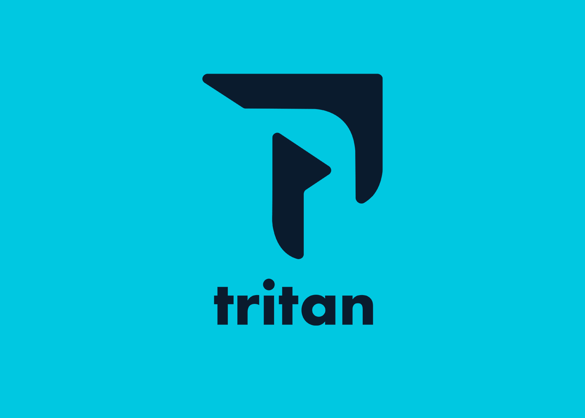

TRITAN
Tritan es un estudio audiovisual con una identidad visual moderna y coherente, inspirada en “ver distinto para crear distinto” y en la tritanopia como rasgo creativo.
Me llamo Diego Cabot, tengo 22 años y soy estudiante de diseño multimedia. Este portfolio reúne trabajos desarrollados en redes sociales, diseño web y audiovisual.
Me interesa explorar cómo el diseño se adapta a distintos formatos y pantallas, buscando coherencia visual y claridad en la comunicación.
Este portfolio acompaña un recorrido audiovisual que muestra cómo estos trabajos se integran a una rutina cotidiana, atravesando distintas pantallas y momentos de uso.
Tritan es un estudio audiovisual con una identidad visual moderna y coherente, inspirada en “ver distinto para crear distinto” y en la tritanopia como rasgo creativo.

Fiestas del Uruguay representa la identidad cultural del país con un sistema visual tipográfico y un isotipo de territorio + sol, aplicado en piezas de redes para comunicar eventos y categorías con claridad.
FLAMMA es una competencia gastronómica basada en el fuego, con una identidad elegante y cálida, contenidos en Instagram que usan pistas visuales sobre ingredientes y desafíos.


Rediseño audiovisual de la aplicación Cómo ir, desarrollado con el objetivo de mejorar la experiencia de usuario y la interfaz visual. El proyecto se centró en optimizar la claridad de la información, la jerarquía visual y la navegación.
Edición de entrevista audiovisual a un artista. El trabajo se centró en el montaje, la selección de fragmentos y el orden del discurso para construir un relato claro y equilibrado.
Corto audiovisual desarrollado a partir del uso del plano detalle como recurso principal. El proyecto explora cómo el encuadre modifica el significado de una escena.
Video realizado a partir de material grabado en Manantiales, La Barra y Punta del Este. El proyecto explora el registro audiovisual y la edición como herramientas narrativas.
Para conocer más sobre mi o seguir mis proyectos, podés encontrarme en: